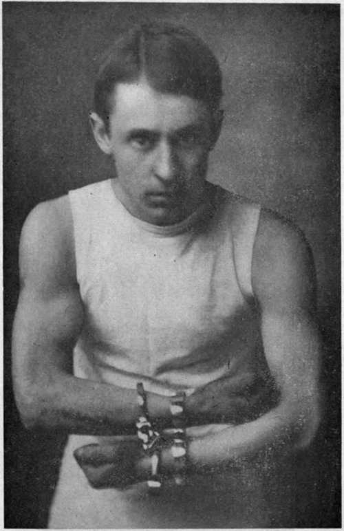
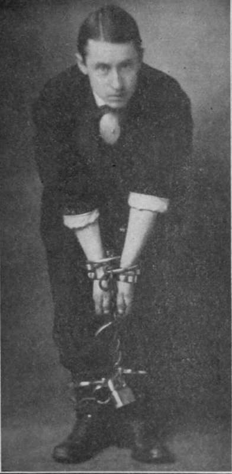
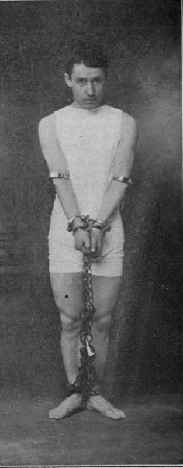
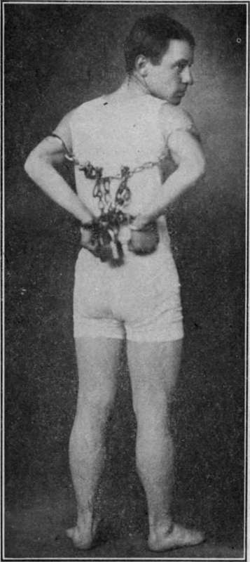

The Handcuff Expose
Description
This section is from the book "Secrets Of The Great Mysteries", by Oudini. Also available from Amazon: Secrets Of The Great Mysteries.
The Handcuff Expose
It has always been a most mystifying thing to the spectators, to witness the escape of a performer after being locked in handcuffs, leg irons, and chains. To see him free himself from them in less time than it took to place them on him has seemed to most people so near to the impossible as to border on the supernatural.
It is, however, like many of our best tricks, a simple one for those who are acquainted with the secret. Up to the present time this secret has been known to very few persons.
Now it must be remembered that handcuffs such as are used by our modern policemen are constructed with soring locks, which are opened by means of a key, which is placed in the lock and turned to the right or left to release the spring.
Handcuff kings use what is known as a pick or reach key in escaping from all handcuffs. And herein lies the whole secret: The performer uses all his ingenuity in concealing his keys and picks about his person or inside of his cabinet, which is generally constructed of piping, with additional pieces which appear to be regular portions of the framework, but are only intended for keys, tools, etc. Other keys the per-former has in sundry pockets especially made for this act, and so arranged that he is able to place has hand upon any key he may want, when placed in any position. In case he finds it impossible to reach the key he wishes to use while locked or chained in a certain position, as for instance in Fig. 3, he can find duplicate keys concealed in the framework of his cabinet, as described previously in this work. When working in a suit without pockets, as in Figs. 1, 2, and 4, the keys must all be obtained from the cabinet render the whole process very clear. In Fig. 1 the performer is fastened in two pairs of handcuffs, in.
Let us now turn to the photographs, which have been especially taken for this book, and which will such a position that it seems impossible that he can ever free himself.
By retiring to his cabinet and reaching for his keys, he is able to open the handcuffs and remove them.
This can be done by moving the right hand, holding the key, around until it can be inserted in the hand cuff on the left hand. The chains between the cuffs are loose enough to. allow this motion. His first pair of cuffs to come off are the ones to the left. The other pair can be taken off easily with a second key.
The handcuffs in this cut are known as the Bean handcuffs and the old English Darby cuff. These are further described in the chapter on handcuffs and keys.
In Fig. 2 the performer is fastened in three pairs of handcuffs, two large chains, one pair of leg irons and two padlocks. To release himself he takes h.s keys from his shoes and takes off the padlocks first and then the chains. The weight of the chains now being off, he can now remove the handcuffs more quickly than if the chains were on. He now releases the leg irons, which leaves him free.
Fig. 3 shows the performer placed in one pair of handcuffs, one chain, one lock, and a pair of irons around his arms. To release himself, he first takes off the handcuffs, then the chains, and then the leg irons around his arms.
The handcuffs in Figs. 2 and 4 are one pair of figure eight handcuffs, one pair of Tower handcuffs, which have a double lock, and one pair of Bean handcuffs and Bean leg irons.
In Fig. 4 the hands are fastened behind the back, and leg irons placed on the arms. These are connected with chains and padlocks. With his experience the performer is able to readily locate the keyholes and quickly remove them, as described under Figs. 1 and -.
Now that the methods have been explained and illustrated it will be readily seen that there is nothing supernatural about the handcuff manipulation.
Continue to:
- prev: The Cabinet
- Table of Contents
- next: The Iron Boiler